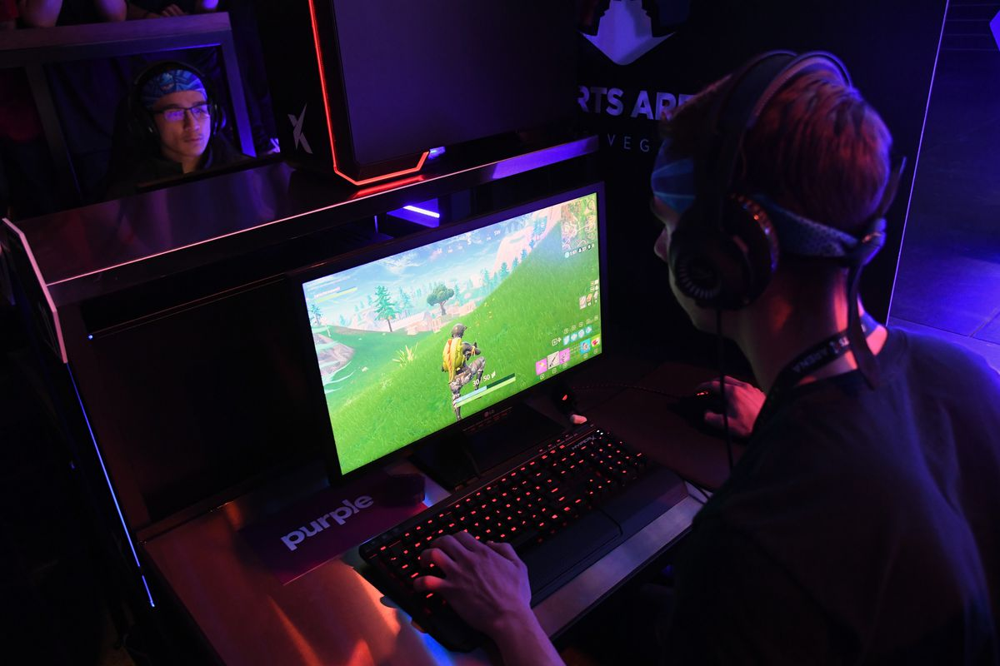

What is an Online game?

An online game is a video game that is played through the Internet or any
other computer network available. Online games are ubiquitous on modern gaming
platforms, and span many genres, including first-person shooters, strategy
games and massively multiplayer online role-playing games.
The main diffirences between “normal” (Offline games) are that offline games
made to be played locally on a single console/computer without requiring an
internet connection. These games usually have a very straightforward path and
a clear conclution.
Online games on the other hand are made to be played together with multiple
people over a network or the internet. These games can have straightforward
objectives but usually dont include a clear conclution.
Having an optimal online gaming experience typically requires a high-speed
Internet connection. Proper hardware will also be required, whether it's a
computer or a gaming console, such as Xbox® or PlayStation®, that's connected
to the Internet. Some Internet games require a specific piece of controlling
hardware, such as a joystick or a game controller. Gaming software, which could
be a CD or DVD that contains the gaming software or which could be available as
a simple download through the Internet, will also be a necessity. With some games,
the latest Flash software and Web browser versions will be needed.
In terms of video games, online gaming is growing in popularity for a variety of
reasons. Gamers can easily find opponents of a similar skill level when playing a
head-to-head game over the Internet. Players also can compete in massively multiplayer
games, where dozens of players play an ongoing game in a virtual world. Often times,
participants can communicate with other gamers through text chat sessions during
online gaming or, sometimes, players can actually speak to other players, using
special audio hardware.
Some online games charge a monthly fee for access to the video game software.
World of Warcraft (WoW) is one such game. A monthly fee might also be offered to
give players access to the network that helps them find and connect to other gamers
remotely. When joining a multiplayer game, participants will have to agree to a set
of rules, often called an End User License Agreement (EULA) that helps prevent conflicts
between players and that defines the required behavior for players. Those who violate
the rules will be banned from playing the game.
 The Game Journal
The Game Journal